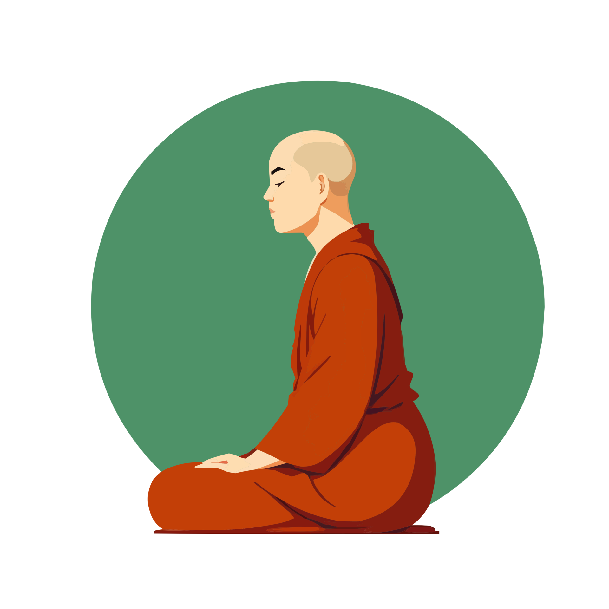

Begin
Find a suitable place, sit down, relax your whole body, and establish mindfulness in front of you. Be aware of each in-breath and out-breath. Know the subtlety, the arising, and the disappearance of the in-breath and out-breath.

Practice steps
- Breathing in — breathing out, clearly knowing the in-breath and the out-breath.
- Breathing in long — breathing out long, clearly knowing the long in-breath and long out-breath.
- Breathing in short — breathing out short, clearly knowing the short in-breath and short out-breath.
- Realizing the entire process of breathing in and breathing out: beginning — middle — end.
- When the breath is deep and the body and mind are calm, awareness naturally becomes more subtle.
- Contemplating the body in the body: inside or outside the body, or both inside and outside.
- Dwelling in contemplation of the process of arising in the body, or the process of disappearance in the body, or both the process of arising and the process of disappearance in the body.
- Or just being completely aware of the breath that is taking place.
Gentle reminder
“What is used must be released.”
When drinking tea, the hands borrow the cup. They grasp it, lift it mindfully to the lips, and then return it to the table. They do not continue holding the cup once its purpose is fulfilled.
If the hands clung to the cup, they would no longer be free to clean, to work, or to receive what comes next. By holding on, they would lose their natural ability to fulfill these duties.
So too with the mind. Objects are borrowed only as needed, then released. When the borrowing is returned immediately, the mind remains free, complete, and unobstructed — able to respond, rather than cling.
Concentration and insight
When we focus completely on the act of breathing naturally and normally, the mind is no longer obscured by subjective thoughts, reasoning, or emotions. We can clearly perceive the true nature of the body, and the illusion of “my body” is ended.
Concentration meditation
Uses inhalation and exhalation as objects and tries to firmly grasp the form of breathing, leading to concentration.
Insight meditation
Focuses on truly observing the nature of breathing, leading to insight.
From the discourse (short excerpt)
The scanned page below contains a longer quotation on mindfulness of breathing and its benefits.
“...mindful he breathes in, mindful he breathes out.”
Key themes
- Knowing long and short breaths; staying mindful of breathing in and out.
- Experiencing the whole body of breath; calming bodily formation.
- Experiencing joy/pleasure; observing mental formations and calming them.
- Steadying and liberating the mind; contemplating impermanence and letting go.
Put it into practice
- Sit for 5 minutes: simply know in-breath / out-breath (no forcing).
- If the mind wanders, return gently to “beginning — middle — end” of one breath.